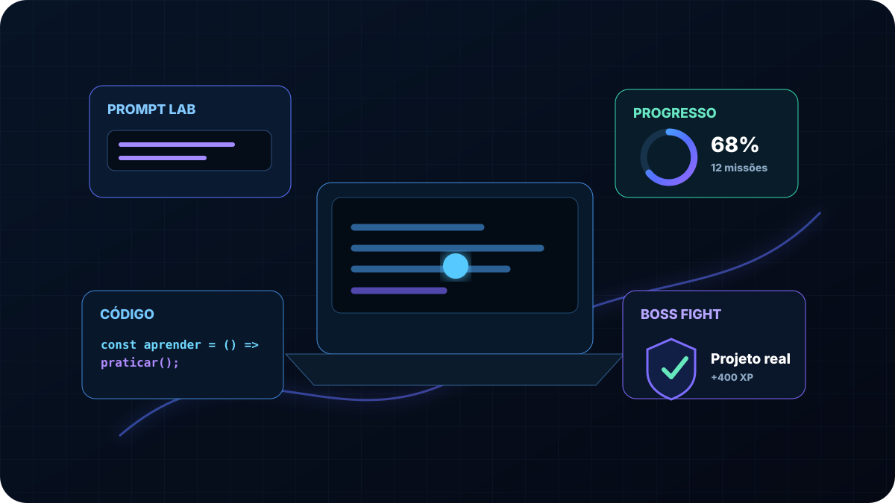

EDUCAÇÃO GRATUITA • PRÁTICA REAL • CERTIFICADO VERIFICÁVEL
Conhecimento que vira habilidade. Sem mensalidade.
Aprenda em aulas completas, pratique dentro da plataforma, valide o que entendeu e avance por trilhas profissionais. A LC foi construída para transformar estudo em capacidade prática.
35cursos e formações publicados2.392aulas publicadas100%acesso gratuito0cartão exigido
MÉTODO LC
Estude em um fluxo que termina em execução.
COMECE PELA BASE
Construa fundamentos antes de avançar
RECOMENDAÇÃO PADRÃO
Lógica de Programação Básica
Problemas, algoritmos, dados, decisões, repetições, funções e listas. Quem já domina a base pode fazer o diagnóstico e seguir pela rota adequada.
Começar gratuitamenteROTAS PERSONALIZADAS
Aprenda de acordo com seu objetivo
Fundamentos, Web, Python, dados, IA e desenvolvimento profissional são organizados em caminhos progressivos.
Descobrir meu caminhoCONTRIBUIÇÃO VOLUNTÁRIA
Ajude a manter a LC gratuita.
Quem quiser apoiar pode contribuir com qualquer valor a partir de R$ 1. Apoio financeiro nunca muda acesso, nota, XP, prioridade ou certificado.
Ver transparência e apoiarACESSO SEM BARREIRA
Entre, escolha uma trilha e comece.
Não há assinatura, cartão obrigatório ou versão limitada do conteúdo. A conta gratuita libera o catálogo publicado e organiza seu progresso.
Começar gratuitamente →